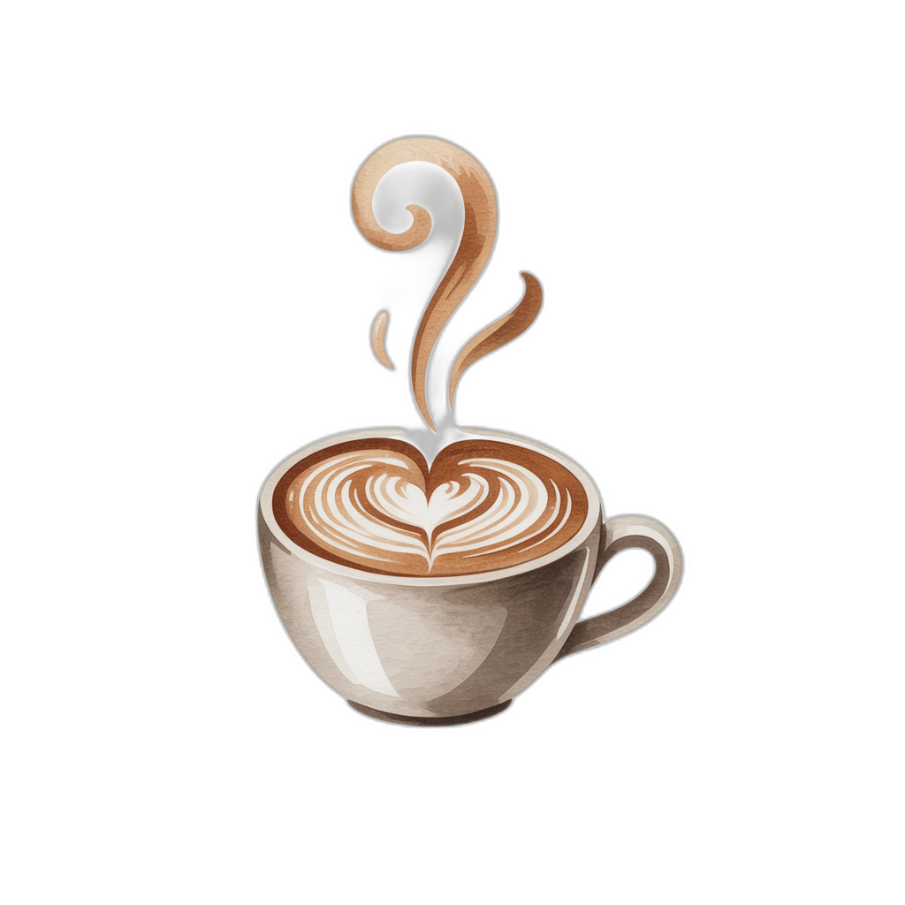
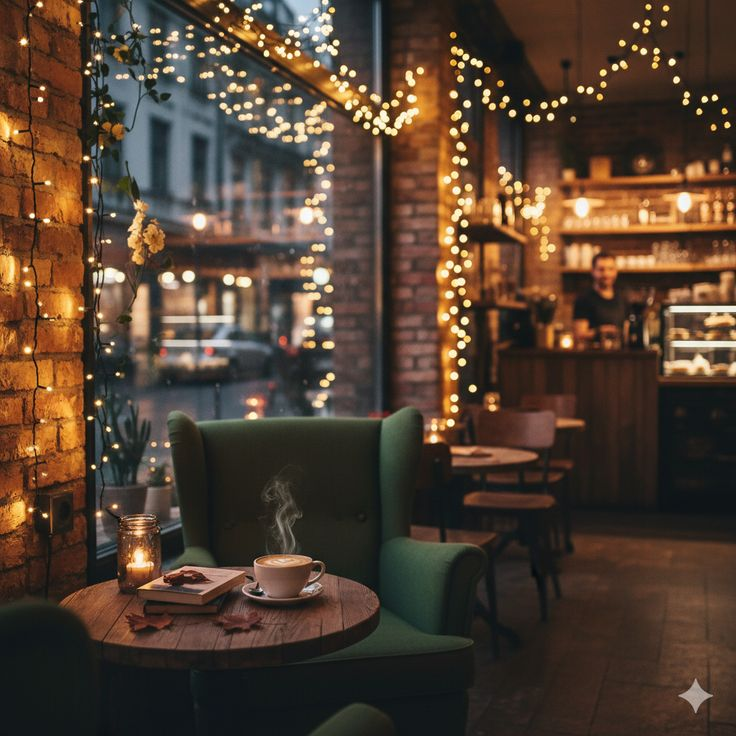
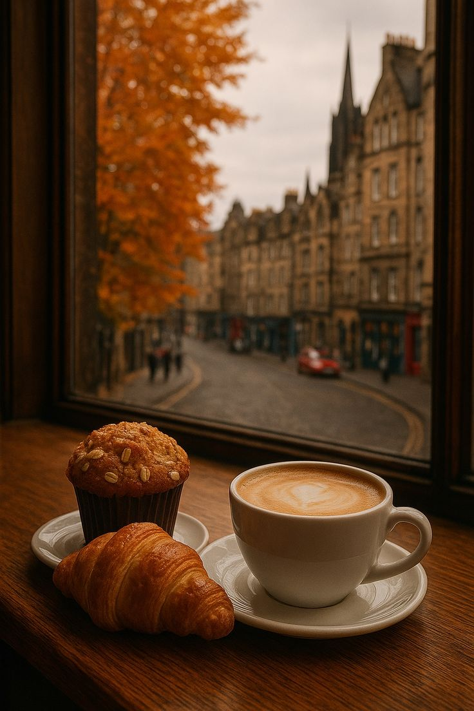
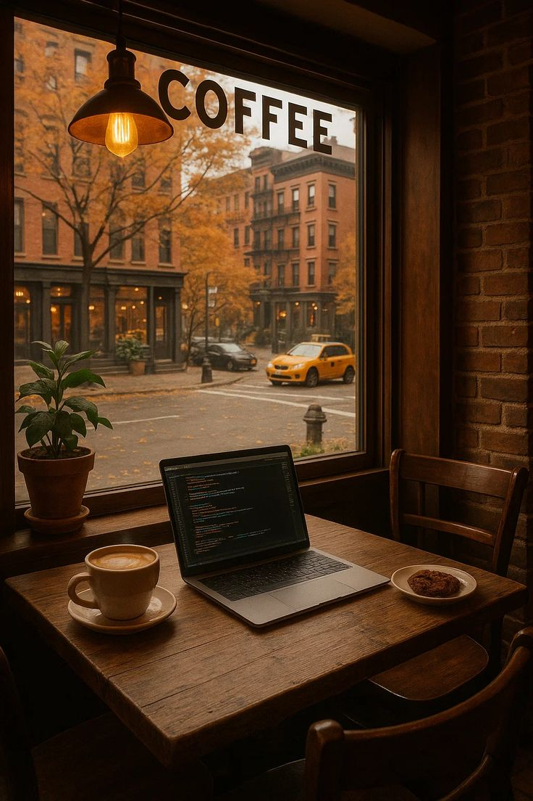
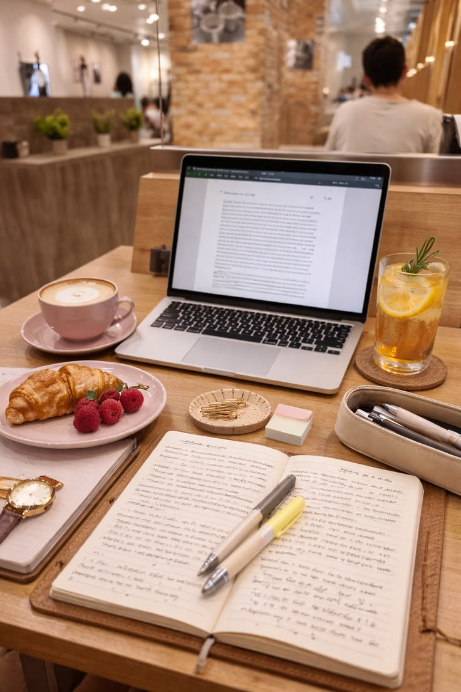
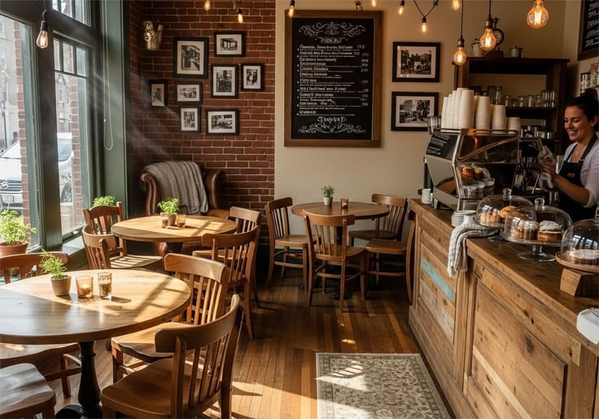
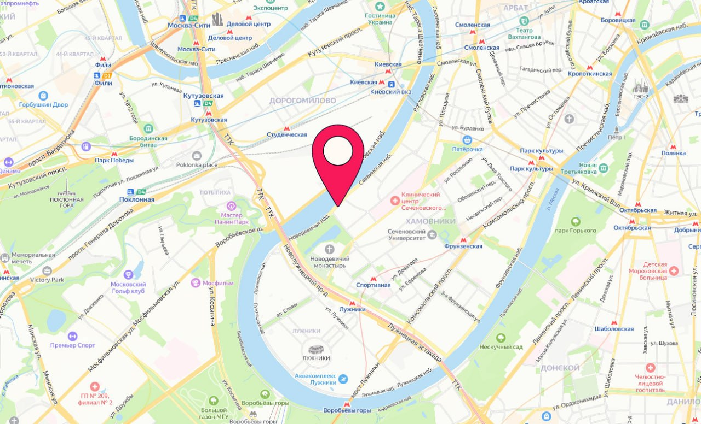

Эспрессо
Короткий, бодрый, без лишних разговоров.
190 ₽
Sanek
Sanek — это маленькая кофейня с большим сердцем и отличным чувством юмора. Назвали в честь владельца, который обещал не кричать на бариста, если вы будете заказывать раф с сиропом в третий раз. Пока держится.
У нас есть розетки. И печеньки. Живите здесь сколько нужно.

Круассан с хрустящей корочкой и мягким сливочным сердцем. Серьезно, он красивее некоторых бывших.
Круассан — 240 ₽


Москва, ул. Тёплый переулок, 7
Ежедневно: 08:00 - 22:00
@sanek.coffee | t.me/sanekcoffee
